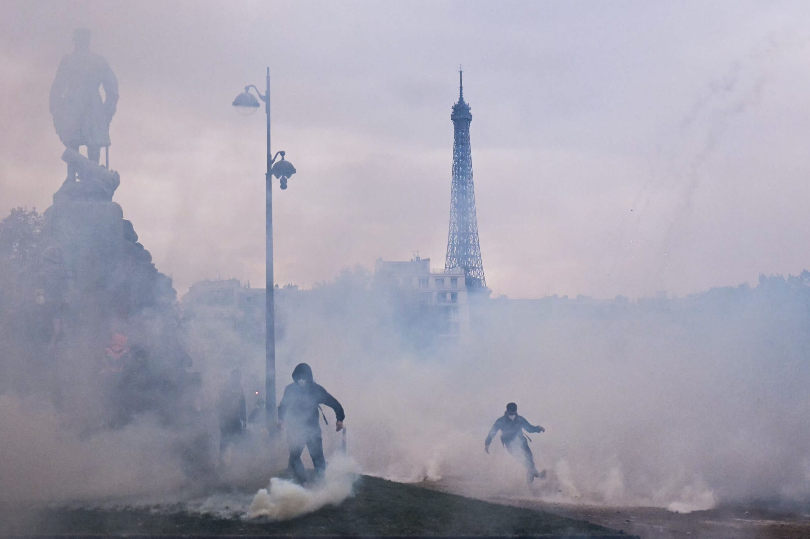

Russian-linked networks were busy around France's October unrest, before the riots and after. But when the story got retold abroad as a migration story, they had plenty of company.
Nearly one in five English-language posts about France's October riots blamed migrants or islam for the violence. In French it was about one in 33. The numbers come from Alliance4Europe's report on the unrest, and since most of that report is about Russian operations, it's easy to read the gap as Moscows work.
The report actually says something messier. Russian state outlets are on its list of those who turned the riots into a migration story for foreign audiences, but so are English-speaking far-right influencers and US media. Donald Trump blamed Muslim immigration, and Benjamin Netanyahu told an Israeli channel that France was facing an invasion of extremist Islam. Neither of them offered any evidence.
To be clear, Russia was working the French protests, and the same report makes a decent case for it, starting weeks before the October 17 riots. The migration story just had more than one source.
I've gone through what's been published so far to sort what's documented from what's being assumed. My short version: decent evidence of Russian-linked information activity around France, a lot less on Italy, and nothing public yet showing that any of it changed what happened in the streets.
The protests had their own reasons
First, some context on why people protested.
France's movement grew out of grievances over schools, living costs and public services. Students had been demonstrating for weeks over conditions in their schools, including staff shortages and run-down facilities, and the mobilization then widened to workers, unions and other groups. On october 17 the marches were followed by heavy rioting, looting and clashes with police.
A weeek later, on October 24, about 410,000 people marched across France according to the Interior Ministry, while the CGT union put the figure near 800,000. Most of those marches were peaceful, although violence broke out again in several cities, Paris and Marseille among them.
Students wanted better schools, workers were protesting wages and prices, and plenty of people were simply fed up with public services and with how the government was handling all of it. That doesn't tell us who organized each confrontation with police, and it doesn't account for every looted shop. It does mean there were large, ordinary domestic reasons for people to be in the street, and any argument about foreign interference has to account for that.
Similar frustrations showed up elsewhere in Europe, but the movements were different from each other. The riots in Milan, the anti government protests in Albania and the unrest in other countries had their own causes, their own participants and their own politics. I dont think they can be treated as pieces of one European campaign without someone showing the connections.
What researchers found before October 17
The strongest public evidence of organized foreign activity comes from France, and most of it comes from one report. Alliance4Europe, a nonprofit registered in Germany that works on information manipulation, analyzed 547,471 posts on X, Telegram, TikTok, YouTube, Facebook and news sites in nine languages, plus nearly 13,000 comments under the most-viewed videos. Its executive summary opens by saying the protests were born in France, have French causes, and that the researchers found no evidence a foreign actor was behind their origin.
What they did find was a bot network that, in the six weeks before October 17, posted 639 coordinated messages in French, German, English and Polish. The report puts the reach at roughly 7.4 million views and attributes the network with high confidence to Doppelganger, the long-running Russian operation known for cloning news sites and pushing manipulated political content. The researchers say they traced the activity back to September 1.
The messages used real grievances and tied them to Ukraine, with the general line that every euro sent to Kyiv is a euro taken from French households. Some invoked the 2018 yellow vest protests. According to the report, the network mostly went after centrist, democratic-left, pro-European and pro-Ukraine politicians, while praising some proposals from Jean-Luc Melenchon and an unnamed "patriot" candidate. The researchers read this as opportunistic, backing no party in particular, with the consistent aim of getting France to stop supporting Ukraine. I find that reading plausible.
This activity was already running before the riots of October 17, so it's inaccurate to describe all of it as exploitation that began after the violence.
The report also gives technical and behavioral indicators of coordination, including accounts created around the same dates, messages posted within short intervals of each other, and 23 of the network's redirect sites sharing a single IP address. Those details make coordination much more likely than a crowd of ordinary users who happen to agree. They don't tell us who gave instructions, who paid for what, or whether any of the people who rioted ever saw this material.
One limitation on my side. I've read the published research and its methodology, but I haven't rebuilt the account network, the historical DNS records or the platform dataset myself. Alliance4Europe's attribution deserves to be taken seriously, but its "high confidence" is their assessment, and it shouldn't be read as an independent check by GeoInsider.
A separate investigation by Alethea, published October 16, described a new Doppelganger campaign aimed at several political events at once, including the US midterms, Israel's election and France's 2027 presidential race. Alethea counted more than 50 seed accounts, over 1,000 amplifying accounts and about 150.000 quoteposts during an October 7–9 push. That supports the idea that the wider Doppelganger network was busy during this period. It doesn't mean Alethea confirmed the 639 protest-related messages, since the two studies used different datasets for partly different questions, and their numbers shouldn't be added together as if they measured one campaign.
After the riots: who retold the story abroad
Once the violence started, coverage abroad changed, and Russia was only one of the actors behind that change.
In Alliance4Europe's data, about one French-language post in 33 directly blamed migrants or Islam for the violence. In English the share was close to one in five. The fire at Limoges town hall is the clearest example. Unfounded claims that immigrants had set it circulated 3.6 times more in English than in French, and in the researchers' dataset the English versions appeared about six hours earlier. That qualifier matters, because "earlier in one dataset" isn't the same as "first published anywhere".
The report is explicit about who drove this reframing abroad. It names Russian state outlets, but also English-speaking far-right influencers and US media, along with pages based outside Europe that sell "European decline" content because it gets clicks. So the one-in-five figure describes a mixed ecosystem. It isn't a measurement of a Russian operation, and I'd be careful with anyone who quotes it as one.
The Russian contribution here is easier to pin down. The Pravda network published 1,018 articles across 28 sites in nine languages, often copying the same piece from one site to the next within minutes. Those are publication counts, not 1,018 separate stories. The researchers argue the network is built as much for search engines and AI systems as for human readers, which would let its claims travel even when nobody visits the sites.
Political leaders joined in too. Donald Trump blamed the unrest on Muslim immigration, and Benjamin Netanyahu told I24News that France was facing an invasion of extremist Islam. Neither offered evidence. Speaking to reporters in Doha on October 21, Emmanuel Macron said he saw no visible foreign interference in the events themselves, but that foreign manipulation of information afterwards had produced unacceptable and stupid comments from many people, foreign leaders included. Asked whether he meant Trump, he answered "among others".
My read is that Russian outlets and parts of the Anglo-American right were pushing the same frame for different reasons. Moscow wants France divided and less committed to Ukraine. Many English-language influencers want a story about immigration and decline, and that kind of content gets engagement. They ended up saying similar things, but I haven't seen any evidence that the two coordinated.
Fakes, and why spotting one isn't attribution
Not all the false material came from state operations, and some of the most widely shared pieces had nothing to do with one.
Some of it wasn't even deliberate. On Saturday, October 24, CNEWS showed masked demonstrators it placed in Paris, and Franceinfo ran pictures of police water cannons over a caption about Lyon. The Associated Press checked both clips and found they came from Tirana, and both channels apologized. I haven't seen anything suggesting an operation behind either mistake, just two newsrooms confusing two countries that were producing very similar images on the same weekend.
BBC Verify looked into an image that supposedly showed an elderly couple robbed and left in their underwear during the unrest. The image was AI-generated. The director of the website that made it admitted producing it and told the BBC it had first been labelled as synthetic. It then spread without that label, including in one post that passed six million views, and the incident it claimed to show hasn't been backed up by any reporting I've found. Private operators, influencers and ordinary accounts can do this on their own, without an intelligence service anywhere in the chain.
BBC Verify also examined more than 15 videos impersonating established news organizations. Researchers at dTeam attributed them to Matryoshka, another operation linked to Russian disinformation.
Here the sources disagree. France's VIGINUM told LIGA.net that, while foreign accounts were active, most of the online discussion stayed rooted in France, and its public report on Matryoshka doesn't attribute fake protest content to that network. That isn't a refutation, since an agency's public report is not the whole of what it knows, and VIGINUM tends to publish carefully and late. But it does mean the Matryoshka attribution currently rests on a research group, without confirmation from the French state body that tracks that network most closely. I'd treat it as plausible and unconfirmed.
Proving that a video is fake, identifying the network that spread it and identifying who runs that network are separate pieces of work.. A lot of the coverage of these protests has gone from the first to the third without doing the second.
Did any of this cause the violence?
On this question the evidence is much weaker. Coordinated posting, cloned websites and millions of views tell us that an operation existed and that its content was displayed a lot of times, according to whatever method the platform or the researchers used to count. None of them tells us how many people were persuaded, how many decided to go to a protest, or whether anyone threw a stone because of something they saw online.
To establish that link, investigators would need a different kind of evidence. One example would be an account tied to a foreign operation posting a specific time and place, with records showing that the call came before the crowd moved and actually reached the people involved. A stronger case would involve authenticated messages between organizers and foreign intermediaries, payments, operational instructions, or testimony that other records corroborate. Europe has seen that pattern in recent sabotage and vandalism cases, where people were recruited over Telegram and paid in small sums, so it isn't far-fetched to look for it here.
The public material I've reviewed doesn't contain that kind of chain for France. That doesn't mean foreign activity had no effect, only that nobody has shown what the effect was.
This is important for how the view counts get used. A view count measures how often content was shown, which can include repeat views and automated accounts, and it says nothing about how many people changed what they did. As far as the public record goes, the contribution of these operations to what happened in the streets is unknown.
Italy
The Milan riots on the weekend of October 17–18 were mostly the work of very young people. According to ANSA, groups of youths swarmed shops and supermarkets, clashed with police and injured 14 officers, and more than 270 people were detained, about 80% of them minors. The retail association Confcommercio put the damage at around a billion euros.
On October 20, Defence Minister Guido Crosetto told a defence procurement forum in Rome that the events in Milan were the product of "hybrid warfare" waged through TikTok, YouTube and other social media. His argument, as ANSA reported it, was that young people had received a "counter-education" from somewhere other than their families and schools. Crosetto didn't name a country. To me it reads as an argument about teenagers being radicalized online. Much of the coverage presented it as an accusation against Russia, but he didn't make one.
In a piece published early on October 21, Open quoted Interior Minister Matteo Piantedosi backing Crosetto. He said Crosetto always speaks with good reason, described an "apparent spontaneity" among the youths that made it hard to rule out organization, and said there was enough to dig deeper. A few hours later, after a provincial public-order meeting in Milan, ANSA quoted Piantedosi saying there was no evidence that the young rioters had been manipulated from outside. I can't tell from the reporting whether he changed his view or was answering two different questions, but within roughly a day the Interior Minister went from supporting the hybrid-war reading to saying there was no evidence for it.
The rest of the government didn't line up either. Matteo Salvini rejected any Russian direction outright, and Roberto Vannacci blamed student collectives, social centres, black bloc, youth gangs and baby gangs. According to Open, which cites Corriere della Sera, Palazzo Chigi's position was that it couldn't be said the Russians sent teenagers to smash shop windows in Milan, while Giorgia Meloni asked the intelligence services for quick answers on the hybrid-war hypothesis.
The claim with the most substance is one I can't check. Open reports, citing government sources, that intelligence reports describe traces of amplification on social media aimed at bringing more people into the streets, and that the sources of the original calls are "well shielded". If that holds up, it's the kind of evidence that would matter, because it concerns mobilization rather than commentary. Right now it's anonymous, second-hand and unpublished, and I can't assess it.
The thread most likely to produce real evidence is judicial. According to La Notizia, the preliminary investigations judge in Milan, Fabrizio Filice, wrote that investigators are looking into a possible organizing hand behind the accounts "Italia in piazza" and "Movimento 17 ottobre", which have been posting the dates for new weekend gatherings. Domani has reported that right-wing groups were also present among the rioters. bloomberg reported that Italy is investigating possible Russian involvement. Nothing published so far shows an operational link between a foreign state and specific incidents in Milan, and the criminal investigation is where such a link would be established or ruled out.
France and Brussels
Macron's line from Doha, no visible interference in the events but foreign manipulation of information afterwards, fits the public evidence fairly well. The Alliance4Europe work adds one correction, which is that some of the coordinated activity started weeks before the riots rather than only after them.
Other French voices went further. Patrick Molinoz, vice-president of the French mayors' association, told Euronews that Russian interference was "quite certain". I haven't seen him point to evidence beyond what's already public.
In Brussels, the reporting has been confusing enough that it needs sorting out. The Financial Times reported that EU regulators were examining online interference from Russia, Iran and Algeria, and that story travelled widely. According to Il Sole 24 Ore, the Commission's own position was that national authorities are handling it for now and that Brussels would step in if the risk becomes systemic. Euronews reported that EU officials didn't have enough evidence to say foreign manipulation was behind the violence, and that no formal Digital Services Act investigation had been opened. These accounts can be reconciled, because monitoring an information space is a different thing from opening a case, and both are different from reaching a conclusion.
On Iran and Algeria specifically, I haven't found public technical evidence of what either country did during these protests. Their names appear in the FT's account of what regulators are looking at, and in some secondary reporting, but I'd treat them as open questions rather than findings.
Governments may well know more than they've published, and that's a real possibility for every country here. But if the evidence stays classified, journalists can't assess it. That limits what anyone can conclude, and it doesn't justify assuming either that officials are right or that they're acting in bad faith.
Europe is not one case
The French evidence is far more developed than anything public for the other countries. For Italy there are political statements, anonymous intelligence claims and an open judicial investigation. For Belgium, Spain and Portugal, what's available is too uneven to support country by country attribution.
Albania's protests have their own long history. They began months ago over corruption allegations and a luxury coastal project, then widened to student demands and calls for Prime Minister Edi Rama to resign. Serbia, which voted on October 25, raises separate political and electoral questions, and its government has a track record of blaming foreign, mostly Western interference for domestic protest. Claims about interference in either country need to be weighed by the same standard, whichever direction they point.
An information network can exploit events in several countries without having organized any of them. Coordinated activity around France doesn't show that the same actors were steering events in Milan, Barcelona or Tirana. Piantedosi reportedly noted that several of the affected countries vote next year, and that's worth keeping in mind as a motive. On its own, though, a motive plus a coincidence in timing isn't evidence of a connection.
My read, and what I'm watching
After going through the material, I think three things are reasonably well supported.
The French protests had large domestic causes. School conditions, wages, prices and frustration with public services explain why so many people had reasons to march, and I'm confident about that.
Coordinated Russian-linked information activity was present both before and after the worst of the violence. Russian-linked networks appear to have taken genuine grievances and pointed them at French support for Ukraine. I'd put moderate confidence on this. The specialist research is detailed, but my judgment leans on it rather than on my own reconstruction of the technical evidence.
The public record doesn't show that these operations organized the protests, directed the rioters or measurably increased the violence. I have little confidence in any attempt to put a number on their influence in the streets, including my own.
For Italy I'm more cautious still. There are strong ministerial statements, a minister of the interior who appears to have moved within a day, and anonymous claims about amplified calls to mobilize. None of it has been published in a form anyone outside government can check.
Influence operations don't need to get anyone to a demonstration to be useful to whoever runs them. If unrest driven largely by schools and living costs turns, for audiences abroad, into proof that immigration has made France ungovernable, the debate has shifted. If economic anger gets redirected into an argument for dropping Ukraine, that serves an obvious foreign-policy aim. I can point to those incentives, but I don't know how much opinion actually moved.
What would change my assessment is evidence that ties foreign-controlled accounts to specific organizers or specific incidents, such as authenticated messages, payment records, instructions, court filings or testimony that other records back up. These are the things I'm watching:
- the Milan investigation, and whether prosecutors identify who runs "Movimento 17 ottobre" and "Italia in piazza";
- whether anything from the intelligence report Meloni asked for reaches COPASIR or the public;
- any technical disclosure from VIGINUM on the protest period, especially on Matryoshka;
- the next quarterly threat reports from Meta, TikTok and Google, which sometimes name takedowns tied to specific events;
- the weekend calls already posted for the coming days, and who amplifies them first.
Sources and methodology
This assessment is based on public reporting and specialist research reviewed through October 26, 2026. It is not an independent forensic reconstruction of the networks described.
Research and verification
- Alliance4Europe, EU Unrest Report (October 22)
- Alethea, Operation Doppelgänger (October 16)
- BBC Verify on foreign leaders and the French riots (October 21)
- LIGA.net, including VIGINUM's comments on the protest period
France and the EU
- Al Jazeera, Macron in Doha (October 21)
- Times of Israel, Macron's remarks and Netanyahu's i24News interview (October 21)
- Euronews, no evidence foreign powers sparked the riots (October 21)
- Euronews, Patrick Molinoz on Russian interference (October 20)
- Il Sole 24 Ore, on the Commission's position and the FT report
- Reuters, French protest groups demand more rallies (October 25)
- Associated Press, French channels misidentify Albanian footage (October 25)
Italy
- ANSA, Piantedosi: no evidence Milan rioters were manipulated (October 21)
- Open, Meloni and the hybrid-war hypothesis (October 21)
- La Notizia, on the Milan preliminary investigations judge's order
- Domani, on right-wing groups among the Milan rioters
- Ukrainska Pravda, citing Bloomberg on Italy's inquiry (October 21)